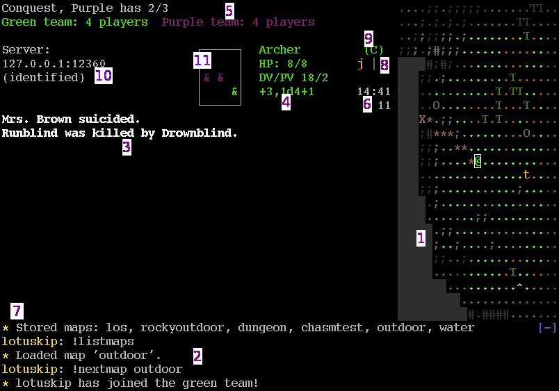

A typical view of a yuxtapa client after succesfully connecting to a server and
joining a team:

Things you see here:
For more information on the contents of the view (1), see Vision and hearing, Map symbols, and maybe Time system.
Note that the chat screen (2) will be as large as your terminal size allows, while all other parts of the screen are of fixed size. It can be scrolled with the +/- keys (or whatever they are mapped to).
The listing (4) is empty if you are only Spectating. The details listed are explained thoroughly in the Rule mechanics page, but roughly speaking they are:
The indicators (8) have an animation (by default a 'rotating' bar) which updates whenever the client receives a view update from the server (see Time system). If it runs 'smoothly', this means your connection is good. If it stops, this means your connection to the server is down, or that the server is in intermission mode. If the animation jerks alot, you are connected but the connection is poor.
Another indicator, not visible in the screenshot, is the walking indicator. It is a white letter 'W', right below the rotating bar. See Movement for more information on this.
The third indicator (the left-most yellow one) is your torch status, see PC Torch.